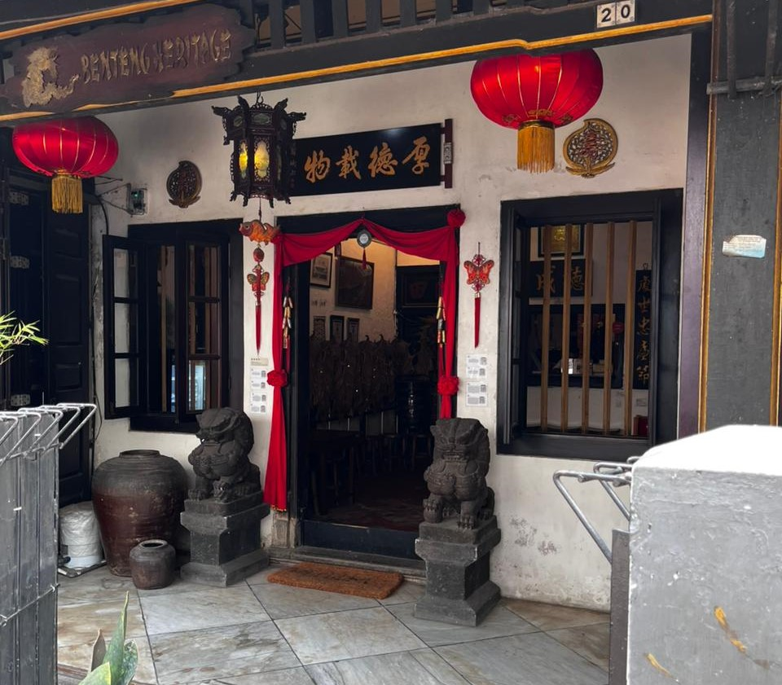

Budaya Cina Benteng: Tradisi, Pernikahan, dan Kesenian Khas

Asal usul
Masyarakat Cina Benteng adalah keturunan orang Tionghoa yang sudah tinggal di Tangerang sejak sekitar tahun 1407. Mereka pertama kali datang dari Tiongkok dan menetap di sekitar Sungai Cisadane (sekarang daerah Teluk Naga). Seiring waktu, mereka berbaur dengan budaya lokal, sehingga terbentuk budaya khas Cina Benteng.
Setelah Indonesia merdeka, sempat terjadi konflik pada tahun 1946 karena sebagian warga Tionghoa dianggap mendukung Belanda. Banyak rumah mereka dijarah dan dirusak. Meski begitu, komunitas Cina Benteng tetap bertahan sampai sekarang dan menjadi bagian penting dari sejarah Tangerang.
Tradisi
Salah satu tradisi yang paling terkenal di masyarakat Cina Benteng adalah upacara pernikahan Cio Tao. Tradisi ini berasal dari budaya Hokkian Selatan dan merupakan gabungan budaya Tionghoa dengan budaya lokal Indonesia.
Dalam upacara ini, kedua mempelai berdoa kepada leluhur dan dewa-dewi agar pernikahan mereka bahagia dan penuh berkah. Biasanya, mereka melakukan sembahyang di depan altar keluarga dengan berbagai sesaji. Cio Tao awalnya berasal dari tradisi agama Konghucu, tetapi sekarang lebih dikenal sebagai adat pernikahan khas Cina Benteng.
Adat Istiadat dalam Pernikahan
Nah jadi di daerah Cina benteng ini ada adat pernikahan yang namanya Cio Tao. Jadi adat pernikahan Cio Tao itu cuma bisa dilakukan sekali seumur hidup. Jadi kalau misalkan seseorang menikah dengan adat Cio Tao lalu cerai dengan istri pertama, untuk menikah kedua kalinya sudah tidak bisa pakai adat Cio Tao.
Jadi pernikahan Cina Benteng ini dia adalah gabungan dua adat antara orang Cina dan Jepang. Itu kebanyakan orang-orang Cina itu orang-orang Betawi jadi dia mau selalu di samaratakan dengan keluarga orang Cina ini. Jadi kebanyakan mereka itu tidak akan terima dan tentang adat dua gabungannya seperti itu.
Kesenian
Jadi Fehyang ini seperti alat-alat dari Cina. Nah ini namanya Fehyang dan ini Erhu. Tapi Erhu ini sudah jarang dinamakan. Jadi si Fehyang ini di kalangan sekolah Cina seperti di daerah tengah-tengah sini sudah jadi satu kesatuan atau bagian dari Gambang Kromong. Jadi di setiap sekolah Gambang Kromong sudah ada yang namanya Fehyang. Caranya ini sama seperti biola digesek, cuman dia di bawah.
Selain itu, ada juga bumbu panggang merdua. Jadi, bumbu panggang merdua ini memang cuma bisa ditemukan di museum. Jadi, biasanya karena di sini kawasan alam Chinese, biasanya bumbunya ini dipakai untuk memanggang daging, ataupun ayam. Tapi kebanyakan orang kata ini tidak terlalu cocok untuk memanggang sapi. Tapi yang jelas, komposisi dari bumbu ini adalah halal. Jadi, ini bisa dipakai untuk ayam.

Suku Betawi
Suku Betawi adalah kelompok etnis Austronesia yang merupakan penduduk asli kota Jakarta dan sekitarnya.
Baca Selengkapnya
Suku Cina Benteng
Masyarakat Cina Benteng adalah keturunan orang Tionghoa yang sudah tinggal di Tangerang sejak sekitar tahun 1407.
Baca Selengkapnya
Suku Batak
Suku Batak merupakan salah satu suku terbesar di Indonesia dan masuk ke dalam urutan ketiga setelah Suku Jawa dan Suku Sunda.
Baca Selengkapnya